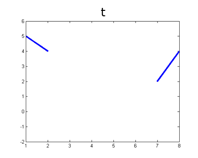
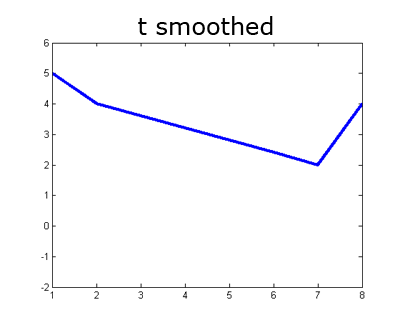
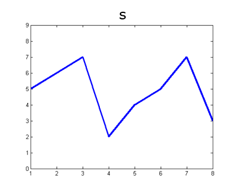
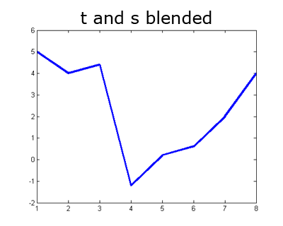

Computational Photography and Image Manipulation
In this assignment, we will implement the Poisson image blending method we covered in class: Perez et al., Poisson Image Editing, ACM Transactions on Graphics, 2003.
Assignment data: Data - zip file
Starter code: Source - zip file (includes some tips on implementation)
Gradient-domain image processing is a simple technique applicable to blending, tone-mapping, and non-photorealistic rendering. In this assignment, we will use gradient-domain blending for seamless image compositing; so-called Poisson blending because in the process of compositing we will solve a kind of second-order partial differential equation commonly known as Poisson's equation (after Siméon Denis Poisson).
The simplest method of compositing would be to replace pixels in a target image with pixels from a source image. Unfortunately, this will create noticeable seams even if the backgrounds are similar. How can we get rid of these intensity difference seams?
The insight is that humans are perceptually sensitive to gradients rather than absolute image intensities. Thus, we set up the problem as one of finding values for the output pixels that maximally preserve the gradients in the source region without changing any of the target pixels. Note that we are making a deliberate decision here to ignore the overall intensity of the source region—we reintegrate (modified) source gradients and forget the absolute source intensity.
Deliverables
A starter code for the assignment is provided above. In your report, you should discuss the specific challenges and their solutions you came across during implementing this algorithm. In your report, you need to provide the blending results of all the examples provided in the data zip file linked above. If your results have some issues, discuss what may be the caouse of these issues in your implementation. You also need to generate 3 blending examples by finding photographs yourself. In a separate zip file, you need to submit all the blending results and the examples you found (including the source, the target and the mask).
Simple 1D Examples
Let's start with a simple case where instead of copying in new gradients we only want to fill in a missing region of an image and keep the gradients as smooth (close to zero) as possible. To simplify things further, let's start with a one dimensional signal instead of a two dimensional image. The example below is contained in the walkthough.m script with the starter code.
Here is our signal \(t\) and a mask \(M\) specifying which "pixels" are missing.
t = [5 4 0 0 0 0 2 4];
M = [0 0 1 1 1 1 0 0];
M = logical(M);

We can formulate our objective as a least squares problem. Given the intensity values of \(t\), we want to solve for new intensity values \(v\) under the mask \(M\) such that: $$v=\underset{v}{\mathrm{argmin}} \sum_{i\in M} \sum_{j\in N_i \cap M} (v_i-v_j)^2 + \sum_{i\in M} \sum_{j\in N_i \cap \sim M} (v_i-t_j)^2$$
Here \(i\) is a coordinate (1D or 2D) for each pixel under mask \(M\). Each \(j\) is a neighbor of \(i\). Each summation guides the gradient (the local pixel differences) in all directions to be close to 0. In the first summation, the gradient is between two unknown pixels, and the second summation handles the border situation where one pixel is unknown and one pixel is known (outside the mask \(M\)). Minimizing this equation could be called a Poisson fill.
For this example, let's define `neighborhood' to be the pixel to your left. In principle, we could define neighborhood to be all surrounding pixels; in 2D, we would at least need to consider vertical and horizontal neighbors. The least squares solution to the following system of equations satisfies the formula above.
v(1) - t(2) = 0; %left border
v(2) - v(1) = 0;
v(3) - v(2) = 0;
v(4) - v(3) = 0;
t(7) - v(4) = 0; %right border
Note that the coordinates don't directly correspond between \(v\) and \(t\)—the first unknown pixel \(v(1)\) sits on top of \(t(3)\). We could formulate it differently if we chose. Plugging in known values of \(t\) we receive:
v(1) - 4 = 0;
v(2) - v(1) = 0;
v(3) - v(2) = 0;
v(4) - v(3) = 0;
2 - v(4) = 0;
Now let's convert this to matrix form and have MATLAB solve it:
A = [ 1 0 0 0; ...
-1 1 0 0; ...
0 -1 1 0; ...
0 0 -1 1; ...
0 0 0 -1];
b = [4; 0; 0; 0; -2];
v = A\b; % 'help mldivide' describes the backslash operator.
t_smoothed = zeros(size(t));
t_smoothed(~M) = t(~M);
t_smoothed( M) = v;

As it turns out, in the 1D case, the Poisson fill is simply a linear interpolation between the boundary values. But, in 2D, the Poisson fill exhibits more complexity. Now instead of just filling, let's try to seamlessly blend content from one 1D signal into another. We'll fill the missing values in \(t\) using the correspondig values in \(s\):
s = [5 6 7 2 4 5 7 3];
Now our objective changes—instead of trying to minimize the gradients, we want the gradients to match another set of gradients (those in \(s\)). We can write this as follows: $$v=\underset{v}{\mathrm{argmin}} \sum_{i\in M} \sum_{j\in N_i \cap M} ((v_i-v_j)-(s_i-s_j))^2 + \sum_{i\in M} \sum_{j\in N_i \cap \sim M} ((v_i-t_j)-(s_i-s_j))^2$$

We minimize this by finding the least squares solution to this system of equations:
v(1) - t(2) = s(3) - s(2);
v(2) - v(1) = s(4) - s(3);
v(3) - v(2) = s(5) - s(4);
v(4) - v(3) = s(6) - s(5);
t(7) - v(4) = s(7) - s(6);
After plugging in known values from \(t\) and \(s\), this becomes:
v(1) - 4 = 1;
v(2) - v(1) = -5;
v(3) - v(2) = 2;
v(4) - v(3) = 1;
2 - v(4) = 2;
Finally, in matrix form for MATLAB:
A = [ 1 0 0 0; ...
-1 1 0 0; ...
0 -1 1 0; ...
0 0 -1 1; ...
0 0 0 -1];
b = [5; -5; 2; 1; 0];
v = A\b;
t_and_s_blended = zeros(size(t));
t_and_s_blended(~M) = t(~M);
t_and_s_blended( M) = v;

Notice that in our quest to preserve gradients without regard for intensity we might have gone too far—our signal now has negative values. The same thing can happen in the image domain, so you'll want to watch for that and at the very least clamp values back to the valid range. When working with images, the basic idea is the same as above, except that each pixel has at least two neighbors (left and top) and possibly four neighbors. Either formulation will work.
For example, in a 2D image using a 4-connected neighborhood, our equations above imply that for a single pixel in \(v\), at coordinate \((i,j)\) which is fully under the mask you would have the following equations:
v(i,j) - v(i-1, j) = s(i,j) - s(i-1, j)
v(i,j) - v(i+1, j) = s(i,j) - s(i+1, j)
v(i,j) - v(i, j-1) = s(i,j) - s(i, j-1)
v(i,j) - v(i, j+1) = s(i,j) - s(i, j+1)
In this case we have many equations for each unknown. It may be simpler to combine these equations such that there is one equation for each pixel, as this can make the mapping between rows in your matrix \(A\) and pixels in your images easier. Adding the four equations above we get:
4*v(i,j) - v(i-1, j) - v(i+1, j) - v(i, j-1) - v(i, j+1) = ...
4*s(i,j) - s(i-1, j) - s(i+1, j) - s(i, j-1) - s(i, j+1)
Where everything on the right hand side is known. This formulation is similar to Equation 8 in the original paper linked above. You can read more of that paper for guidance, especially the section on the "Discrete Poisson Solver".
Note that these formulations are not equivalent. The more verbose formulation is a constraint on first derivatives, while combining the equations effectively gives you a constraint on the discrete Laplacian. You are free to implement either approach. The discrete Laplacian method which uses one equation per pixel leads to a simply implemention because the A matrix will be more easily indexed.
Tips
- For color images, process each color channel independently (hint: matrix \(A\) won't change, so don't go through the computational expense of rebuilding it for each color channel).
- The linear system of equations (and thus the matrix \(A\)) becomes enormous. But \(A\) is also very sparse because each equation only relates a pixel to some number of its immediate neighbors. Use MATLAB's support for sparse matrices!
- \(A\) needs at least as many rows and columns as there are pixels in the masked region (or more, depending on how you've set up your system of equations. You may have several equations for each pixel, or you may have equations for already known pixels just for implementation convenience). If
the mask covers 100,000 pixels, this implies a matrix with at least 100,000,000,000 entries. Don't try that. Instead, use the sparse() command in Matlab to build sparse matrices for which all undefined elements are assumed to be \(0\). A naive implementation will run slowly because indexing into a sparse matrix requires traversing a linked list. If you're building the sparse \(A\) matrix in a for loop, it will take 5 to 30 seconds. Test your algorithm on smaller images first.
- You'll need to keep track of the relationship between coordinates in matrix \(A\) and image coordinates. sub2ind and ind2sub might be helpful (although they are slow, so you might want to do the transformation yourself). You might need a dedicated data structure to keep track of the mapping between rows and columns of \(A\) and pixels in \(s\) and
\(t\).
- Not every pixel has left, right, top, and bottom neighbors. Handling these boundary conditions might get slightly messy. You can start by assuming that all masked pixels have 4 neighbors (this is intentionally true of the first 5 test cases), but the 6th test case will break this assumption.
- Your algorithm can be made significantly faster by finding all the \(A\) matrix values and coordinates ahead of time and then constructing the sparse matrix in one operation. See sparse(i,j,s,m,n,nzmax). This should speed up blending from minutes to seconds.
- By avoiding for loops entirely you can get the run time down to about one second, but don't worry about this unless everything else is working.
- imblend.m in the starter code contains some more suggestions.
Acknowledgements
This assignment makes use of material by James Tompkin with the excellent 1-D demo for the concept. The project was derived by James Hays. Original project specification by Pat Doran. Previous revisions used material from Derek Hoiem and Ronit Slyper.